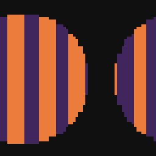
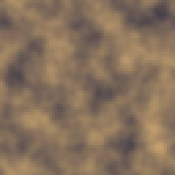
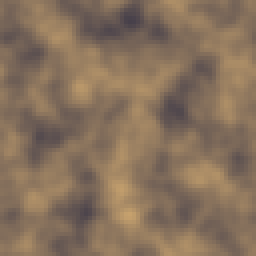
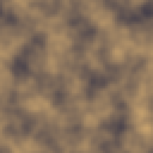
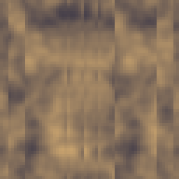

Most of the engine answers with one picture. The Animation folder is where a wire starts carrying a sequence of them instead, and the rest of the engine barely notices: a still image is a sequence one frame long, so any of these nodes sit downstream of any generator or filter without special wiring. Anim Source and Motion are where a sequence is usually born, either read off the sprite (or a GIF, or a tag) or made by looping a static texture. Everything after that reshapes timing: skipping or holding frames, reversing or repeating, retiming the clock, offsetting the start, layering ghost trails, crossfading in-betweens, or staggering playback per pixel. Anim Output is where it lands, ready for the exporters.
None of this needs the timeline to be useful; Frame Step, Playback and the rest work on whatever sequence arrives. But several of these nodes expose a plain number, not a mode, as their main knob (Palette Cycle's phase is the same idea, one folder over), and that is what the timeline is for: key one of these numbers across frames and the effect runs on your own clock instead of the node's built-in loop.

Brings the sprite frames, a GIF or a tag in as a sequence.
Where a sequence usually enters the graph. Source Canvas reads the sprite's own frames, GIF file loads one off disk, and Tag restricts the read to one animation tag, in which case Repeats decides how many times that tag plays before the sequence ends (1-8), which matters because a tag that loops forever in the sprite still has to hand a finite number of frames downstream.
From/To trim the range (0 on either side keeps the open end, exactly like the Palette family's range cuts), and FPS overrides the source's own tempo when it's not 0. The node carries a play/pause/stop transport strip in the editor, the same one Motion shows, since this is the other place you'd want to scrub a sequence before it goes anywhere.
Without a bridge to the host (headless tests, or a build that never wired one) this node quietly answers a blank frame instead of failing, the same way a Layer node degrades when there's nothing to read. If you drop this node and get nothing but transparency, check that a Canvas, GIF or Tag actually exists before suspecting the graph.
In: nothing · Out: image
Parameters
Animates a still texture: loops it, spins it or pulses it.
Turns a still texture into a loop, or layers motion onto an animated input that already has its own length. Type Scroll moves the texture by whole widths or heights per cycle: Scroll X/Scroll Y are integer steps (-4 to 4), so frame N+1 lands exactly back on frame 1 and the loop repeats with no visible jump, which is the standard move for tiling water, lava or a scrolling background layer.
Rotate spins the input one full turn over the cycle, Strength's sign choosing direction; Pulse instead multiplies brightness by a sine wave, Strength setting how far it swings (a photograph of a torch flickering, or a gem catching light). Frames (2-64) sets the cycle length for a static input; wire an already-animated source in and this node keeps that length instead and applies the motion on top, frame for frame.
This is usually the first node in a chain I reach for the play/pause/stop strip on, since it is where an animation is typically born rather than only reshaped.
In: In (image) · Out: image
Parameters

Skips one frame in every N, or holds them to animate on twos.
Two ways to change which frames of a sequence get played, and they answer different questions. Mode Skip drops frames outright: Every Nth at 3 on a 30-frame walk leaves 10 frames, shorter and visibly choppier at the same fps, useful when a source was captured or generated at a higher rate than the final art needs. Hold keeps the original length but repeats every Nth frame instead of dropping anything, the classic animate-on-twos or animate-on-threes look, without changing how long the loop takes to play.
Phase offsets which frames are kept or held (0-7), which matters once you have two sequences on Skip or Hold at the same step and want them out of sync with each other rather than landing on identical frames every time.
I use Hold constantly on anything sourced from a smooth 60fps generator (Motion's Rotate, for instance) to fake the two-frames-per-drawing feel of hand-done sprite animation, and Skip when a sequence genuinely has more frames than the silhouette needs to read.
In: In (image) · Out: image
Parameters

Plays backwards, ping-pong, repeated, or freezes one frame.
Sequence surgery on an existing animation: this node doesn't generate anything, it rearranges frames that are already there. Mode Reverse flips the order outright. Ping-Pong plays forward then back without doubling the two end frames, so a loop of a swinging lantern doesn't stutter at the top and bottom of its arc. Repeat concatenates the whole sequence Repeat times (1-8) over, which is mostly useful right before Frame Blend or Echo, both of which read across frame boundaries and behave better with more material to work from. Freeze is the odd one out: it picks a single Freeze frame and returns it as a plain static image, the bridge back into the ordinary non-animated pipeline when you only needed one pose out of a whole walk cycle.
I reach for Ping-Pong far more than Reverse on its own; a straight reverse rarely reads as natural motion, but a there-and-back cycle covers a lot of ambient animation (a flag, a hanging sign, an idle breathing loop) with one extra click.
In: In (image) · Out: image
Parameters
Stretches or shrinks the sequence duration by a percentage.
Retimes a sequence by a percentage, picking the nearest existing frame rather than blending between two, because pixel art doesn't hold up to motion blur. Speed % (10-400) at 200 halves the frame count outright; at 50 it doubles it by repeating frames rather than inventing new ones, so slowing down never gets smoother than the source actually is, only longer. FPS overrides the output clock when it isn't 0; left at 0 it keeps whatever the source's own fps was.
This is the node to use when a Motion or Anim Source sequence plays back faster or slower than the rest of a scene needs, without touching whatever built it in the first place. If you actually need smoother slow motion rather than only longer, that's Frame Blend's job instead, since this node deliberately never invents an in-between frame.
In: In (image) · Out: image
Parameters

Rotates the sequence start by N frames, wrapping around the end.
Rotates where a looping sequence starts, wrapping past the end back to the beginning, without changing anything about the motion itself. Shift frames (-32 to 32) is the only knob: shift by half the sequence's length and frame 1 becomes whatever used to be the midpoint.
The whole point of this node is instant desynchronization between two copies of the same animation. Feed the same Motion-driven flame or the same Echo trail into two sprites on a wall, offset one of them by a handful of frames, and they stop looking like a single pattern copy-pasted twice. It's a one-parameter node and it earns its place in the folder entirely on that trick: without it, every duplicated animated element in a scene ticks in lockstep, and that reads as artificial faster than almost anything else does.
In: In (image) · Out: image
Parameters
Leaves a trail of the previous frames, each one fainter.
An onion-skin trail: every output frame carries a fading copy of the frames that came before it, baked directly into the pixels rather than as an editor overlay. Ghosts (1-8) sets how many previous frames get layered in behind the current one, and Decay (10-90) is how much each step back fades, compounding, so a Decay of 50 with 3 Ghosts leaves the most recent ghost at half strength, the one before that at a quarter, and so on.
Because the ghost indices wrap around the sequence, the trail already exists correctly on frame 1, there's no fade-in at the start of the loop the way a naive implementation would have. This is the node for a sword swing, a dash, or anything with fast linear motion that needs a speed-line trail; it reads worse on anything that changes direction, since the ghosts pile up in whichever direction the source was moving a moment ago rather than where it's headed.
In: In (image) · Out: image
Parameters
Interleaves new frames by crossfading each pair, and multiplies the fps.
Generates real in-between frames by crossfading each pair of neighbours, which is different from what Speed does: this node invents new frames instead of only picking from the ones that exist. Smoothness x (2-8) is how many frames replace each single source frame; at 2 every original frame gets one interpolated frame inserted after it, at 8 it gets seven. The output fps multiplies along with the frame count, capped at 60, so the wall-clock duration of the loop holds steady until the ceiling forces it to run faster.
This is the node for turning a rough 4 or 8-frame animation into something that reads as smooth without hand-drawing more frames, at the cost of the crossfade itself being visible if you look for it (a form of motion blur, in effect). I use it on background elements and effects more than on a character's main pose changes, where the blur between two held poses tends to look wrong rather than fluid.
In: In (image) · Out: image
Parameters

Delays each pixel by where it sits: a wave, a radius or a mask.
Delays each pixel of a sequence by a different amount, turning a uniform loop into something that ripples across the image instead of moving all at once. Pattern picks the spatial rule: Wave X and Wave Y delay by a sine wave across that axis, with Waves (1-8) setting how many full cycles fit across the image so the pattern still tiles; Radial delays by distance from the centre outward; Map reads the luminance of a second wired input instead, so any generator or hand-painted mask can drive the stagger directly.
Max delay (-32 to 32) is the biggest gap in frames between the earliest and latest pixel; the sign flips which end of the pattern lags behind. This is the node that turns a plain Motion pulse into wind moving through grass, or a flat scroll into water with a current, and the Map mode is worth building a dedicated noise or gradient graph for rather than reusing whatever's already at hand, since the mask is read once from its first frame even if it's animated itself.
In: In (image), Map (image) · Out: image
Parameters

Closes the animation and exports it to GIF, frames, a sheet or the sprite.
The terminal node of the category, where a finished sequence is held for whatever reads it next: the live preview, and the exporters that turn it into a GIF, a folder of frame images, a sprite sheet, or frames applied straight back onto the open sprite. Like Output in the main pipeline it's a singleton the graph keeps exactly one of, but unlike Output it can be deleted and re-added, since a graph without one isn't ready to export yet rather than being broken.
Tag the frames on apply (on by default) decides whether applying the result back to the sprite also wraps the new frames in an Aseprite tag, which is worth turning off if you're laying frames onto an existing animation rather than starting a fresh one, since a second tag on top of frames that already belong to one adds clutter to the tag list for no reason. If a static image reaches this node instead of a sequence, it passes through as a one-frame result rather than erroring, which is what makes it safe to leave connected while you're still building the animated part of a graph upstream.
In: In (image) · Out: -
Parameters